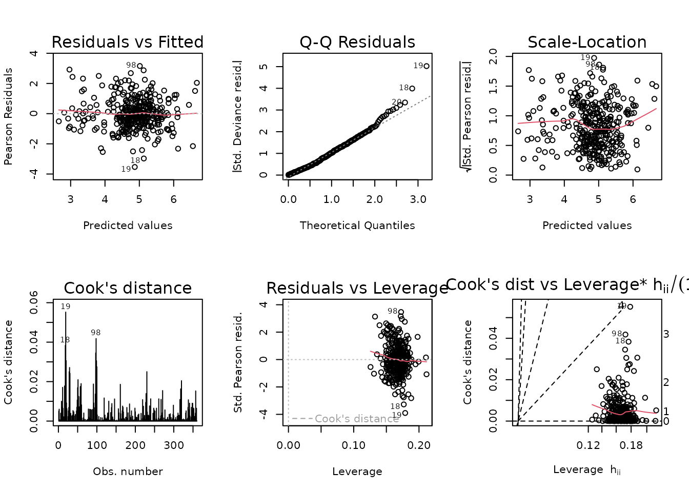

vignettes/ADIPOCYTE_SIZE_STATS.Rmd
ADIPOCYTE_SIZE_STATS.Rmd
library(MotrpacRatTraining6moWAT)
library(MotrpacRatTraining6moWATData)
library(MASS) # glm.nb
library(emmeans)
library(dplyr)
# Count adipocytes by bin and experimental group
count_summary <- ADIPOCYTE_SIZE %>%
group_by(pid, sex, timepoint, diameter_bin) %>%
summarise(binned_adipocytes = n(),
.groups = "keep") %>%
group_by(pid) %>%
mutate(total_adipocytes = sum(binned_adipocytes),
adipocyte_prop = binned_adipocytes / total_adipocytes) %>%
ungroup()
# Negative Binomial GLM with log link and offset
fit <- glm.nb(binned_adipocytes ~ sex * timepoint * diameter_bin +
offset(log(total_adipocytes)),
link = "log",
data = count_summary)
plot_lm <- function(x) {
on.exit(par(mfrow = c(1, 1)))
par(mfrow = c(2, 3))
for (i in 1:6) plot(x, which = i)
}
plot_lm(fit)
Observations 18 and 19 appear to be outlying, but there are almost 56K observations in the data, so they will not substantially affect the model fit.
# Model summary
summary(fit)
#>
#> Call:
#> glm.nb(formula = binned_adipocytes ~ sex * timepoint * diameter_bin +
#> offset(log(total_adipocytes)), data = count_summary, link = "log",
#> init.theta = 41.44465041)
#>
#> Coefficients:
#> Estimate Std. Error z value Pr(>|z|)
#> (Intercept) -1.68746 0.06869 -24.567 < 2e-16
#> sexMale 0.06403 0.09774 0.655 0.512383
#> timepoint4W 0.24576 0.09577 2.566 0.010281
#> timepoint8W 0.08760 0.09698 0.903 0.366390
#> diameter_bin[20,25) -0.33211 0.09852 -3.371 0.000749
#> diameter_bin[25,30) -0.47826 0.09928 -4.817 1.45e-06
#> diameter_bin[30,35) -0.54237 0.09964 -5.443 5.24e-08
#> diameter_bin[35,40) -0.66390 0.10040 -6.613 3.77e-11
#> diameter_bin[40,45) -0.62835 0.10017 -6.273 3.54e-10
#> diameter_bin[45,50) -0.71719 0.10076 -7.118 1.09e-12
#> diameter_bin[50,55) -0.78835 0.10126 -7.785 6.95e-15
#> diameter_bin[55,60) -0.96252 0.10264 -9.377 < 2e-16
#> diameter_bin[60,62.31] -2.19878 0.12145 -18.105 < 2e-16
#> sexMale:timepoint4W -0.27854 0.13644 -2.042 0.041198
#> sexMale:timepoint8W 0.23634 0.13616 1.736 0.082601
#> sexMale:diameter_bin[20,25) -0.11671 0.14083 -0.829 0.407256
#> sexMale:diameter_bin[25,30) -0.13041 0.14213 -0.918 0.358837
#> sexMale:diameter_bin[30,35) -0.12307 0.14269 -0.863 0.388397
#> sexMale:diameter_bin[35,40) 0.01183 0.14314 0.083 0.934139
#> sexMale:diameter_bin[40,45) -0.03904 0.14306 -0.273 0.784960
#> sexMale:diameter_bin[45,50) -0.04028 0.14399 -0.280 0.779649
#> sexMale:diameter_bin[50,55) -0.13697 0.14542 -0.942 0.346230
#> sexMale:diameter_bin[55,60) -0.13159 0.14765 -0.891 0.372801
#> sexMale:diameter_bin[60,62.31] 0.23208 0.17122 1.355 0.175264
#> timepoint4W:diameter_bin[20,25) -0.11873 0.13732 -0.865 0.387263
#> timepoint8W:diameter_bin[20,25) -0.06373 0.13929 -0.458 0.647269
#> timepoint4W:diameter_bin[25,30) -0.13927 0.13831 -1.007 0.313959
#> timepoint8W:diameter_bin[25,30) -0.10089 0.14053 -0.718 0.472781
#> timepoint4W:diameter_bin[30,35) -0.23422 0.13907 -1.684 0.092140
#> timepoint8W:diameter_bin[30,35) -0.16149 0.14133 -1.143 0.253181
#> timepoint4W:diameter_bin[35,40) -0.28660 0.14024 -2.044 0.040991
#> timepoint8W:diameter_bin[35,40) -0.02496 0.14180 -0.176 0.860249
#> timepoint4W:diameter_bin[40,45) -0.42269 0.14050 -3.009 0.002625
#> timepoint8W:diameter_bin[40,45) -0.04929 0.14158 -0.348 0.727764
#> timepoint4W:diameter_bin[45,50) -0.48411 0.14162 -3.418 0.000630
#> timepoint8W:diameter_bin[45,50) -0.09792 0.14266 -0.686 0.492491
#> timepoint4W:diameter_bin[50,55) -0.54868 0.14271 -3.845 0.000121
#> timepoint8W:diameter_bin[50,55) -0.14908 0.14369 -1.038 0.299472
#> timepoint4W:diameter_bin[55,60) -0.51522 0.14454 -3.564 0.000365
#> timepoint8W:diameter_bin[55,60) -0.22583 0.14628 -1.544 0.122645
#> timepoint4W:diameter_bin[60,62.31] -0.54701 0.17282 -3.165 0.001549
#> timepoint8W:diameter_bin[60,62.31] -0.30675 0.17695 -1.734 0.082996
#> sexMale:timepoint4W:diameter_bin[20,25) 0.09216 0.19636 0.469 0.638823
#> sexMale:timepoint8W:diameter_bin[20,25) -0.08310 0.19583 -0.424 0.671297
#> sexMale:timepoint4W:diameter_bin[25,30) 0.19496 0.19780 0.986 0.324304
#> sexMale:timepoint8W:diameter_bin[25,30) -0.11313 0.19759 -0.573 0.566954
#> sexMale:timepoint4W:diameter_bin[30,35) 0.33871 0.19857 1.706 0.088050
#> sexMale:timepoint8W:diameter_bin[30,35) -0.19437 0.19872 -0.978 0.328032
#> sexMale:timepoint4W:diameter_bin[35,40) 0.29968 0.19955 1.502 0.133148
#> sexMale:timepoint8W:diameter_bin[35,40) -0.42153 0.19916 -2.117 0.034296
#> sexMale:timepoint4W:diameter_bin[40,45) 0.43266 0.19983 2.165 0.030381
#> sexMale:timepoint8W:diameter_bin[40,45) -0.50557 0.19933 -2.536 0.011203
#> sexMale:timepoint4W:diameter_bin[45,50) 0.46159 0.20136 2.292 0.021883
#> sexMale:timepoint8W:diameter_bin[45,50) -0.57859 0.20102 -2.878 0.003997
#> sexMale:timepoint4W:diameter_bin[50,55) 0.62660 0.20311 3.085 0.002035
#> sexMale:timepoint8W:diameter_bin[50,55) -0.46992 0.20284 -2.317 0.020523
#> sexMale:timepoint4W:diameter_bin[55,60) 0.65767 0.20568 3.198 0.001386
#> sexMale:timepoint8W:diameter_bin[55,60) -0.48771 0.20652 -2.362 0.018200
#> sexMale:timepoint4W:diameter_bin[60,62.31] 0.63699 0.23846 2.671 0.007557
#> sexMale:timepoint8W:diameter_bin[60,62.31] -0.46675 0.24164 -1.932 0.053412
#>
#> (Intercept) ***
#> sexMale
#> timepoint4W *
#> timepoint8W
#> diameter_bin[20,25) ***
#> diameter_bin[25,30) ***
#> diameter_bin[30,35) ***
#> diameter_bin[35,40) ***
#> diameter_bin[40,45) ***
#> diameter_bin[45,50) ***
#> diameter_bin[50,55) ***
#> diameter_bin[55,60) ***
#> diameter_bin[60,62.31] ***
#> sexMale:timepoint4W *
#> sexMale:timepoint8W .
#> sexMale:diameter_bin[20,25)
#> sexMale:diameter_bin[25,30)
#> sexMale:diameter_bin[30,35)
#> sexMale:diameter_bin[35,40)
#> sexMale:diameter_bin[40,45)
#> sexMale:diameter_bin[45,50)
#> sexMale:diameter_bin[50,55)
#> sexMale:diameter_bin[55,60)
#> sexMale:diameter_bin[60,62.31]
#> timepoint4W:diameter_bin[20,25)
#> timepoint8W:diameter_bin[20,25)
#> timepoint4W:diameter_bin[25,30)
#> timepoint8W:diameter_bin[25,30)
#> timepoint4W:diameter_bin[30,35) .
#> timepoint8W:diameter_bin[30,35)
#> timepoint4W:diameter_bin[35,40) *
#> timepoint8W:diameter_bin[35,40)
#> timepoint4W:diameter_bin[40,45) **
#> timepoint8W:diameter_bin[40,45)
#> timepoint4W:diameter_bin[45,50) ***
#> timepoint8W:diameter_bin[45,50)
#> timepoint4W:diameter_bin[50,55) ***
#> timepoint8W:diameter_bin[50,55)
#> timepoint4W:diameter_bin[55,60) ***
#> timepoint8W:diameter_bin[55,60)
#> timepoint4W:diameter_bin[60,62.31] **
#> timepoint8W:diameter_bin[60,62.31] .
#> sexMale:timepoint4W:diameter_bin[20,25)
#> sexMale:timepoint8W:diameter_bin[20,25)
#> sexMale:timepoint4W:diameter_bin[25,30)
#> sexMale:timepoint8W:diameter_bin[25,30)
#> sexMale:timepoint4W:diameter_bin[30,35) .
#> sexMale:timepoint8W:diameter_bin[30,35)
#> sexMale:timepoint4W:diameter_bin[35,40)
#> sexMale:timepoint8W:diameter_bin[35,40) *
#> sexMale:timepoint4W:diameter_bin[40,45) *
#> sexMale:timepoint8W:diameter_bin[40,45) *
#> sexMale:timepoint4W:diameter_bin[45,50) *
#> sexMale:timepoint8W:diameter_bin[45,50) **
#> sexMale:timepoint4W:diameter_bin[50,55) **
#> sexMale:timepoint8W:diameter_bin[50,55) *
#> sexMale:timepoint4W:diameter_bin[55,60) **
#> sexMale:timepoint8W:diameter_bin[55,60) *
#> sexMale:timepoint4W:diameter_bin[60,62.31] **
#> sexMale:timepoint8W:diameter_bin[60,62.31] .
#> ---
#> Signif. codes: 0 '***' 0.001 '**' 0.01 '*' 0.05 '.' 0.1 ' ' 1
#>
#> (Dispersion parameter for Negative Binomial(41.4447) family taken to be 1)
#>
#> Null deviance: 3503.96 on 359 degrees of freedom
#> Residual deviance: 369.98 on 300 degrees of freedom
#> AIC: 3409.6
#>
#> Number of Fisher Scoring iterations: 1
#>
#>
#> Theta: 41.44
#> Std. Err.: 4.19
#>
#> 2 x log-likelihood: -3287.599We will compare each trained group to their sex-matched sedentary controls by diameter bin using the Dunnett test for comparisons against a reference.
ADIPOCYTE_SIZE_STATS <- emmeans(fit, specs = "timepoint",
by = c("diameter_bin", "sex")) %>%
contrast(method = "dunnett") %>%
summary(infer = TRUE, type = "response") %>%
as.data.frame() %>%
mutate(diameter_bin = factor(diameter_bin),
signif = cut(p.value,
breaks = c(0, 0.001, 0.01, 0.05, 1),
labels = c("***", "**", "*", ""),
include.lowest = TRUE, right = FALSE,
ordered_result = TRUE))
# Save
usethis::use_data(ADIPOCYTE_SIZE_STATS, internal = FALSE,
overwrite = TRUE, version = 3, compress = "bzip2")